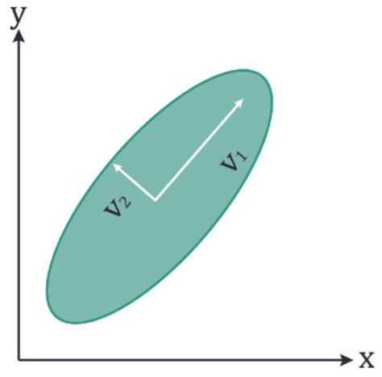
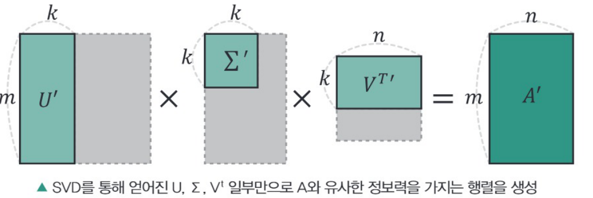
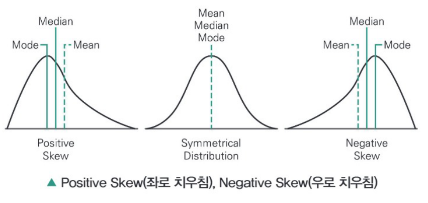
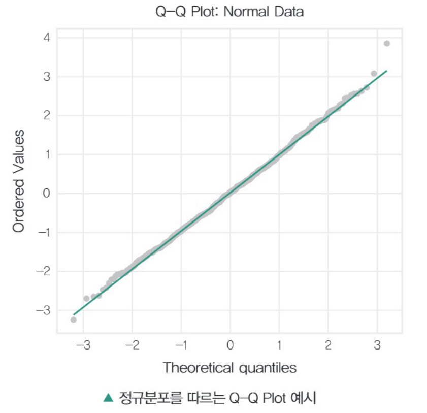
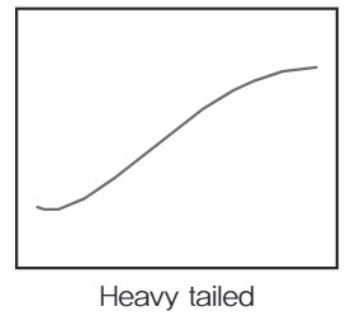
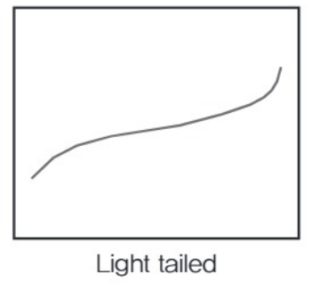
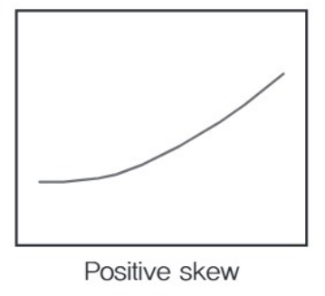
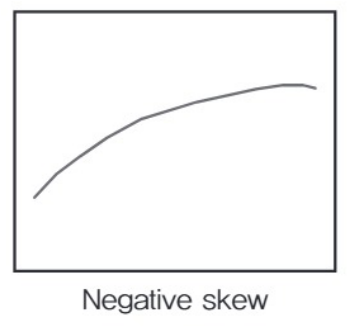
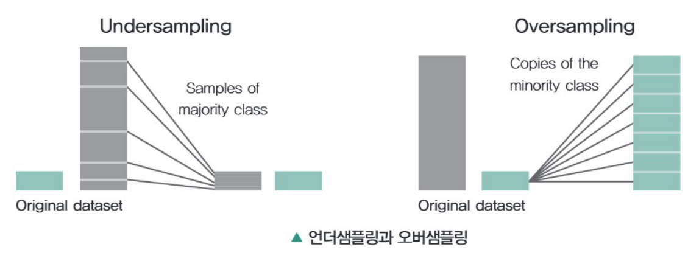

PART 02 · CHAPTER 01 데이터 전처리
원본: 04_빅분기필기-데이터전처리.pdf (책 1-202 ~ 1-239)
전사 완료 — 책 1-202 ~ 1-240 (SECTION 01 · 02 본문, 개념 체크, 예상문제 및 정답 & 해설 포함). 단, 원본 PDF에 1-215쪽이 누락되어 SECTION 01 예상문제 11 · 12번 문항 본문은 전사하지 못했습니다(정답 · 해설은 수록). 좌측 퀵메뉴는 본문 제목을 따라 자동 생성됩니다.
PART 02 빅데이터 탐색
2과목은 데이터를 어떻게 처리하고 탐색하는지에 대한 이해가 필요합니다. 관련 기술과 통계와 관련한 어려운 개념들이 등장하므로 이해는 물론 수학적 해석 능력이 요구될 수 있습니다. 시험 전반의 베이스가 되는 내용이므로 철저히 공부하여 준비하는 것이 좋습니다.
CHAPTER 01 데이터 전처리
데이터 전처리를 위해 필요한 기법을 학습합니다. 분석 전 단계로서 데이터 정제의 필요성과 과정을 이해하고, 결측값과 이상값의 처리, 변수선택 방법, 차원축소, 파생변수와 변수변환 방법을 학습합니다.
특히, 결측값과 이상값을 탐지하고 이를 대체할 수 있는 방법과 차원축소 기법들은 시험에서 중요한 비중을 차지하니 철저히 공부해야 합니다.
SECTION 01 데이터 정제
빈출 태그 데이터의 정의와 종류 · 정제 · 결측값 · 이상값
01 데이터에 내재된 변수의 이해
빅데이터 분석이나 전통적 통계분석을 통해 원하는 결과를 얻기 위해서는 모든 근간이 되는 자료의 이해가 필수이다. 여기서는 자료에 대한 엄밀한 정의와 관련된 내용에 대해 다룬다.
1) 데이터 관련 정의
- 데이터(Data) : 이론을 세우는 기초가 되는 사실 또는 자료를 지칭하며 컴퓨터와 연관되어 프로그램을 운용할 수 있는 형태로 기호화 · 수치화한 자료를 말한다.
- 단위(Unit) : 관찰되는 항목 또는 대상을 지칭한다.
- 관측값(Observation) : 각 조사 단위별 기록정보 또는 특성을 말한다.
- 변수(Variable) : 각 단위에서 측정된 특성 결과이다.
- 원자료(Raw Data) : 표본에서 조사된 최초의 자료를 이야기한다.
2) 데이터의 종류
- 단변량자료(Univariate Data) : 자료의 특성을 대표하는 특성 변수가 하나인 자료이다.
- 다변량자료(Multivariate Data) : 자료의 특성을 대표하는 특성 변수가 두 가지 이상인 자료이다.
- 질적자료(Qualitative Data) : 정성적 또는 범주형 자료라고도 하며 자료를 범주의 형태로 분류한다. 분류의 편의상 부여된 수치의 크기 자체에는 의미를 부여하지 않는 자료이며 명목자료, 서열자료 등이 질적자료로 분류된다.
| 질적자료 | 설명 |
| 명목자료 (Nominal Data) | 측정대상이 범주나 종류에 대해 구분되어지는 것을 수치 또는 기호로 분류되는 자료이다. 예 전화번호상의 국번 · 지역번호(명목자료 처리 시 사용가능 연산자는 ≠, =) |
| 서열자료 (Ordinal Data) | 명목자료와 비슷하나 수치나 기호가 서열을 나타내는 자료이다. 예 기록경기의 순위 등 일반적인 순위를 나타내는 대부분의 자료를 지칭(자료 처리 시 사용가능 연산자는 ≠, =, ≤, ≥) |
- 수치자료(Quantitative Data) : 정량적 또는 연속형 자료라고도 한다. 숫자의 크기에 의미를 부여할 수 있는 자료를 나타내며 구간자료, 비율자료가 여기에 속한다.
| 수치자료 | 설명 |
| 구간자료 (Interval Data) | 명목자료, 서열자료의 의미를 포함하면서 숫자로 표현된 변수에 대해서 변수 간의 관계가 산술적인 의미를 가지는 자료이다. 예 온도(비율로 의미가 부여될 수 있는 자료가 아니며 사용연산자는 ≠, =, ≤, ≥, +, −) |
| 비율자료 (Ratio Data) | 명목자료, 서열자료, 구간자료의 의미를 다 가지는 자료로서 수치화된 변수에 비율의 개념을 도입할 수 있는 자료이다. 예 무게(사용연산자는 ≠, =, ≤, ≥, +, −, ×, ÷) |
- 시계열자료(Time Series Data) : 일정한 시간간격 동안에 수집된, 시간개념이 포함되어 있는 자료이다.
예 일별 주식 가격 - 횡적자료(Cross Sectional Data) : 횡단면자료라고도 하며 특정 단일 시점에서 여러 대상으로부터 수집된 자료이다. 즉 한 개의 시점에서 여러 대상으로부터 취합하는 자료를 말한다.
- 종적자료(Longitudinal Data) : 시계열자료와 횡적자료의 결합으로 여러 개체를 여러 시점에서 수집한 자료이다.
데이터의 종류는 앞의 내용에서 변수들의 집합인 자료의 종류와 그 특성을 동일하게 가지므로 데이터의 종류에 따라서 적용방법론이 다양하게 변화할 수 있다.
3) 데이터의 정제
수집된 데이터를 대상으로 분석에 필요한 데이터를 추출하고 통합하는 과정이다. 정제는 단순한 오류 제거를 넘어서, 데이터를 분석 목적에 맞게 구성하고 변환하여 분석 가능한 상태로 만드는 핵심 단계이다.
① 데이터 정제의 필요성
- 원하는 결과나 분석을 얻기 위해서는 수집된 데이터를 분석 도구나 기법에 맞게 다듬는 과정이 반드시 필요하다.
- 정제를 거치지 않으면 분석 결과가 왜곡되거나 신뢰도를 잃을 수 있다.
② 정제 과정을 거치지 않은 데이터의 문제점
- 데이터 구성의 일관성이 부족해 분석 도구 적용이 어렵다.
- 결측치, 중복, 오류로 인해 도출된 결과의 신뢰성 저하가 발생한다.
③ 데이터 정제의 과정(Processing)
- 다양한 매체로부터 데이터를 수집한 후, 이를 원하는 형태로 변환하고 지정된 장소에 저장한다. 이후 저장된 데이터는 활용 가능성을 검토하기 위한 품질 확인 절차를 거치며, 필요한 시기와 목적에 맞게 원활하게 사용할 수 있도록 관리되어야 한다.
- 데이터 정제는 일반적으로 다음과 같은 전처리 단계를 포함한다.
| 전처리 단계 구분 | 수행 내용 |
| 데이터의 수집 |
|
| 데이터의 변환 |
|
| 데이터의 교정 |
|
| 데이터의 통합 |
|
- 집계(Aggregation) : 데이터를 요약하거나 그룹화하여 통계적 정보를 얻는 과정으로 합계, 평균, 중앙값, 최빈값, 최소/최대값, 분산, 표준편차 등을 이용하여 데이터의 특성을 파악한다.
- 일반화(Generalization) : 데이터 변환 과정에서 데이터의 일반적인 특성이나 패턴을 추출하는 작업이다. 데이터를 단순히 변환하는 것 이상으로, 복잡성을 줄이고 중요한 특징을 강조한다. 예를 들어, 이미지 처리에서 일반화는 주어진 이미지에서 특징을 추출해 새로운 이미지에서도 유사한 패턴을 인식하게 한다.
- 정규화(Normalization) : 데이터를 일정한 범위로 조정하여 상대적인 크기 차이를 제거하고 표준화하는 작업이다. 일반적으로 수치형 데이터에 적용되며, Min-Max 정규화, Z-score 정규화 등의 방법이 사용된다.
- 평활화(Smoothing) : 데이터의 변동을 줄이고 노이즈를 제거하여 추세나 패턴을 부드럽게 만드는 기술이다. 이동평균법, 지수평활법, Savitzky-Golay 필터법 등이 대표적인 방법이다.
- 시스템 내 · 외부에서 데이터를 수집하면 정형(Structured)보다 비정형(Unstructured) 데이터가 많다. 이 경우 기본적으로 구조화된 정형 데이터로의 변환을 수행하고, 변환된 데이터에서는 결측치나 오류의 수정 과정을 거쳐야 한다.
- 기존 시스템 내의 데이터와 비교 · 분석이 필요한 경우, 레거시(Legacy) 데이터와의 통합 · 변환 과정이 발생할 수 있다.
④ 데이터 정제의 전처리 · 후처리
- 전처리(Pre Processing) : 데이터 저장 전의 처리 과정으로 대상 데이터와 수집방법 결정, 저장 방식과 장소 선정 등을 포함한다.
- 후처리(Post Processing) : 저장 후의 처리 과정을 의미하며, 저장된 데이터의 품질관리, 활용 가능성 확인 등을 포함한다.
02 데이터 결측값 처리
데이터 분석에서 결측치(결측값, Missing Data)는 데이터가 없음을 의미한다.
- 결측치를 임의로 제거 시 : 분석 데이터의 직접손실로 분석에 필요한 유의수준 데이터 수집에 실패할 가능성이 발생한다.
- 결측치를 임의로 대체 시 : 데이터의 편향(bias)이 발생하여 분석 결과의 신뢰성 저하 가능성이 있다.
결측치에 대한 처리는 임의 제거 · 대체의 방법을 사용함에 있어 상기의 문제를 피하는 데이터에 기반한 방법으로 처리해야 한다.
1) 결측 데이터의 종류
① 완전 무작위 결측(Missing Completely At Random, MCAR)
어떤 변수상에서 결측 데이터가 관측된 혹은 관측되지 않는 다른 변수와 아무런 연관이 없는 경우이다.
② 무작위 결측(Missing At Random, MAR)
변수상의 결측데이터가 관측된 다른 변수와 연관되어 있지만 그 자체가 비관측값들과는 연관되지 않은 경우이다.
③ 비 무작위 결측(Not Missing At Random, NMAR)
어떤 변수의 결측 데이터가 완전 무작위 결측(MCAR) 또는 무작위 결측(MAR)이 아닌 결측데이터로 정의하는 즉, 결측변수값이 결측여부(이유)와 관련이 있는 경우이다.
예 지역 가구소득 조사 시 소득이 적은 가구에 대한 소득값 결측이 쉽다(소득이 적은 가구는 소득을 밝히기 싫어함을 가정).
- X, Y, Z와 관계없이 Z가 없는 경우 : 데이터의 누락(응답 없음) → 완전 무작위 결측(MCAR)
- 여성(Y)은 체중 공개를 꺼려 하는 경향 : Z가 누락될 가능성이 Y에만 의존 → 무작위 결측(MAR)
- 젊은(X) 여성(Y)의 경우는 체중 공개를 꺼리는 경우가 더 높음 → 무작위 결측(MAR)
- 무거운(가벼운) 사람들은 체중 공개 가능성이 적음 : Z가 누락될 가능성이 Z값 자체에 관찰되지 않는 값에 달려 있음 → 비 무작위 결측(NMAR)
2) 결측값 유형의 분석 및 대치
- 결측치의 처리를 위해서 실제 데이터셋에서 결측치가 어떤 유형으로 분류되는지 분석하고 분석된 결과에 따라서 결측치 처리 방법의 선택이 필요하다.
- 일반적으로 결측 · 무응답을 가진 자료를 분석할 때는 완전 무작위 결측(MCAR)하에 처리한다. 즉, 불완전한 자료는 무시하고 완전히 관측된 자료만을 표준적 분석을 시행한다. 그러나 이런 결측치가 존재하는 데이터를 이용한 분석은 다음 세 가지 고려사항이 발생하는데 효율성(efficiency), 자료처리의 복잡성, 편향(bias) 문제이다.
① 단순 대치법(Simple Imputation)
기본적으로 결측치에 대하여 MCAR 또는 MAR로 판단하고 이에 대한 처리를 하는 방법이다.
- 완전 분석(Completes Analysis) : 불완전 자료는 완전하게 무시하고 분석을 수행한다. 분석의 용이성을 보장하나 효율성 상실과 통계적 추론의 타당성에 문제발생 가능성이 있다.
- 평균 대치법(Mean Imputation) : 관측 또는 실험으로 얻어진 데이터의 평균으로 결측치를 대치해서 사용한다. 평균에 의한 대치는 효율성의 향상 측면에서 장점이 있으나 통계량의 표준오차가 과소 추정되는 단점이 있다. 비조건부 평균 대치법이라고도 한다.
- 회귀 대치법(Regression Imputation) : 회귀분석에 의한 예측치로 결측치를 대치하는 방법으로 조건부 평균 대치법이라고도 한다.
결측값이 없는 다른 변수(독립변수)를 이용하여 결측값이 있는 변수(종속변수)를 예측하는 회귀모델을 구축하고 사용하여 결측값을 대체한다.
| 장점 |
|
| 단점 |
|
- 단순확률 대치법(Single Stochastic Imputation) : 평균 대치법에서 추정량 표준오차의 과소 추정을 보완하는 대치법으로 Hot-deck 방법이라고도 한다. 확률추출에 의해서 전체 데이터 중 무작위로 대치하는 방법이다.
- 최근접 대치법(Nearest-Neighbor Imputation) : 전체표본을 몇 개의 대체군으로 분류하여 각 층에서의 응답자료를 순서대로 정리한 후 결측값 바로 이전의 응답을 결측치로 대치한다. 응답값이 여러 번 사용될 가능성이 단점이다.
사회적 조사방법론의 경우 조사단위 대치법(Substitution Imputation), 콜드덱 대치(Cold-deck Imputation), 이월 대치법(Carry-over Imputation)의 방법도 있다.
② 다중 대치법(Multiple Imputation)
단순 대치법을 복수로 시행하여 통계적 효율성 및 일치성 문제를 보완하기 위하여 만들어진 방법이다. 복수 개(n개)의 단순대치를 통해 n개의 새로운 자료를 만들어 분석을 시행하고 시행결과 얻어진 통계량에 대해 통계량 및 분산 결합을 통해 통합하는 방법이다.
- 1단계 – 대치단계(Imputation Step) : 복수의 대치에 의한 결측을 대치한 데이터를 생성한다.
- 2단계 – 분석단계(Analysis Step) : 복수 개의 데이터셋에 대한 분석을 시행한다.
- 3단계 – 결합단계(Combination Step) : 복수 개의 분석결과에 대한 통계적 결합을 통해 결과를 도출한다.
03 데이터 이상값 처리
이상치(이상값, Outlier)란 데이터의 전처리 과정에 발생 가능한 문제로 정상의 범주(데이터의 전체적 패턴)에서 벗어난 값을 의미한다. 데이터의 수집과정에서 오류가 발생할 수도 있기 때문에 이상치가 포함될 수 있다. 오류가 아니더라도 굉장히 극단적인 값의 발생으로 인한 이상치가 존재할 수도 있다.
이상치는 앞선 결측치와 마찬가지로 분석결과의 왜곡이 발생할 수 있으므로 처리하는 작업이 필요하다.
1) 이상치의 종류 및 발생원인
① 이상치의 종류
- 단변수 이상치(Univariate Outlier) : 하나의 데이터 분포에서 발생하는 이상치를 말한다.
- 다변수 이상치(Multivariate Outlier) : 복수의 연결된 데이터 분포공간에서 발생하는 이상치를 의미한다.
② 이상치의 발생 원인
- 비자연적 이상치 발생(Artificial/Non-Natural Outlier)
- 입력실수(Data Entry Error) : 데이터의 수집과정에서 발생하는 에러로 입력의 실수 등을 지칭한다.
- 측정오류(Measurement Error) : 데이터의 측정(Measuring) 중에 발생하는 에러로 측정기 고장(이상 작동)으로 발생되는 문제이다.
- 실험오류(Experimental Error) : 실험과정 중 발생하는 에러로 실험환경에서 야기된 모든 문제점을 지칭한다.
- 의도적 이상치(Intentional Outlier) : 자기 보고 측정(Self-reported Measure)에서 발생되는 이상치를 지칭한다. 의도가 포함된 이상치로 예를 들어 남성의 키를 조사 시 의도적으로 키를 높게 기입하는 경우 등이 있다.
- 자료처리오류(Data Processing Error) : 복수 개의 데이터셋에서 데이터를 추출 · 조합하여 분석 시, 분석 전의 전처리에서 발생하는 에러를 말한다.
- 상기 경우 이외에 발생하는 이상치들은 자연적 이상치(Natural Outlier)라고 한다.
2) 이상치의 문제점
- 기초(통계적) 분석결과의 신뢰도 저하 : 평균, 분산 등에 영향을 준다. 단 중앙값은 영향이 적다.
- 기초통계에 기반한 다른 고급 통계분석의 신뢰성 저하 : 검정 · 추정 등의 분석, 회귀분석 등이 영향을 받는다.
- 특히 이상치가 비무작위성(Non-Randomly)을 가지고 나타나게(분포하게) 되면 데이터의 정상성(Normality) 감소를 초래하며 이는 데이터 자체의 신뢰성 저하로 연결될 가능성이 있다.
3) 이상치의 탐지
종속변수가 단변량(Univariate)인지 다변량(Multivariate)인지, 그리고 데이터의 분포가 정규분포를 따르는지 여부(모수적/비모수적 가정)를 고려하여 적절한 방법을 선택해야 한다.
① 시각화(visualization)를 통한 방법(비모수적, 단변량(2변량)의 경우)
- 상자 수염 그림(Box Plot, 상자 그림)
- 데이터의 분포를 한 눈에 볼 수 있게 시각화하여 이상치 등을 탐지할 수 있는 시각화 도구이다.
- 데이터의 최솟값, 최댓값, 중앙값, 1사분위수(Q1), 3사분위수(Q3) 등을 표현한다.
- 집단이 여러 개인 경우에도 한 공간에 쉽게 나타낼 수 있다.
25, 28, 29, 29, 30, 34, 35, 35, 37, 38
- 자료를 오름차순으로 정렬하고 중앙값을 구한다.
자료의 개수가 짝수일 경우, 중앙값은 가운데 두 수의 평균이다.
(30 + 34) / 2 = 32 - 사분위수를 구한다.
3사분위수(Q3) = 데이터를 정렬했을 때 75%에 위치한 수 = 35
1사분위수(Q1) = 데이터를 정렬했을 때 25%에 위치한 수 = 29
사분위범위(IQR) = Q3 − Q1 = 35 − 29 = 6 - 최댓값, 최솟값을 구한다.
최댓값 = Q3 + (1.5*IQR) = 35 + 9 = 44
최솟값 = Q1 − (1.5*IQR) = 29 − 9 = 20
- 줄기-잎 그림(Stem and Leaf Diagram)
- 줄기-잎 그림은 주로 작은 데이터셋에 적합하며, 각 데이터 포인트를 숫자의 일부인 줄기와 그 줄기에 해당하는 값들의 리스트인 잎으로 분리하여 나타낸다. 이를 통해 데이터의 분포와 이상치를 확인할 수 있다.
줄기는 데이터의 정수 부분을 나타내고, 잎은 소수 부분이나 가장 오른쪽 자리수로 사용된다.
예를 들어 16, 19, 23, 24, 25, 34, 35, 42, 100을 줄기-잎 그림으로 나타낸다면 다음과 같다.
2 | 3 4 5
3 | 4 5
4 | 2
10 | 0
- 산점도 그림(Scatter Plot)
- 두 변수로 이루어진 데이터를 2차원 평면 상에 점으로 표현하는 시각화 방법으로, 데이터 포인트들이 그래프 상에서 너무 멀리 떨어져 있는 값을 이상치로 판단한다.
② z-score를 이용한 이상치 탐지 방법(모수적 단변량 또는 저변량의 경우)
- z-score는 데이터 포인트가 평균으로부터 얼마나 떨어져 있는지를 표준편차의 단위로 나타내는 통계적 지표이다.
- 먼저 데이터를 정규화하여 평균이 0이고 표준편차가 1인 표준정규분포로 변환한다. 이를 위해 각 데이터 포인트에서 평균을 빼고, 표준편차로 나누어준다.
- 정규화된 데이터 포인트(x)의 z-score를 계산한다.
| zi | > zthr
- 통상적 임계값(threshold)은 1σ 사이(전체의 68.27%), 2σ 사이(전체의 95.45%) 3σ 사이(전체의 99.73%) 등을 사용한다.
(4σ, 5σ, 6σ 등 용도에 따라 정밀도를 높여 제거) - 보통 z-score의 절댓값이 일정한 임계값보다 큰 데이터는 이상치로 간주된다. 일반적으로, 임계값은 1σ 사이(전체의 68.27%), 2σ 사이(전체의 95.45%) 3σ 사이(전체의 99.73%) 등을 사용한다.
- z-score를 이용한 이상치 탐지 방법은 데이터가 정규분포를 따른다고 가정할 때 효과적으로 작동할 수 있으며, 비정규분포를 따르는 경우에는 잘못된 결과를 도출할 수 있으므로 주의가 필요하다.
③ 밀도기반 클러스터링 방법(Density Based Spatial Clustering of Application with Noise, DBSCAN)
- 비모수적 다변량의 경우 군집간의 밀도를 이용하여 특정 거리 내의 데이터 수가 지정 개수 이상이면 군집으로 정의하는 방법이다. 정의된 군집에서 먼거리에 있는 데이터는 이상치로 간주한다.
④ 고립 의사나무 방법(Isolation Forest)
- 데이터가 다른 데이터들과 얼마나 분리되어 있는지를 측정하여 이상치를 탐지한다. 알고리즘의 매개변수 설정과 이상치 판단 기준의 임계값 설정에 따라 결과가 달라질 수 있다.
| 데이터 포인트 분할 | 먼저 데이터를 분할하여 의사결정나무를 생성한다. 데이터를 분할할 때는 이상치를 찾기 위해 특정 기준을 사용한다. |
| 분할 기준 설정 | 분할 기준은 데이터의 특성에 따라 정해진다. 예를 들어, 데이터의 특성 값이 특정 임계값보다 큰 경우와 작은 경우로 분할할 수 있다. |
| 분할된 데이터 영역 계산 | 각 분할된 영역에서의 데이터 밀도를 계산한다. 이를 통해 데이터가 다른 데이터들과 얼마나 분리되어 있는지를 측정할 수 있다. |
| 이상치 탐지 | 데이터의 분리 정도를 기준으로 이상치를 탐지한다. 일반적으로 밀도가 낮은 영역에 위치한 데이터들이 이상치로 간주된다. |
| 의사결정나무 생성 | 데이터의 분할과 이상치 탐지를 반복하여 의사결정나무를 생성한다. 이상치를 제외한 정상 데이터들은 나무의 잎 노드에 할당된다. |
- 상자 그림에서 사분위범위(IQR)는 제3사분위수(Q3)에서 제1사분위수(Q1)를 뺀 값으로, 데이터의 산포 정도를 나타낸다.
- 상자 그림을 이용한 이상치 탐지 방법은 정규분포를 가정하지 않는 비모수적(Non-Parametric) 방법이다.
- 일반적으로 상자그림에서는 Q1−1.5×IQR보다 작거나 Q3+1.5×IQR보다 큰 값을 이상치로 판단한다.
- 상자 그림은 평균(Mean)을 기준으로 상자의 위치를 결정하며, 평균으로부터 일정 거리 이상 떨어진 값을 이상치로 판정한다.
- IQR은 데이터의 중간 50%가 퍼져 있는 정도를 나타내며 Q3 − Q1이다.
- 이상치 판정 기준은 다음과 같다.
- 하한 : Q1−1.5×IQR
- 상한 : Q3+1.5×IQR
- 상자그림은 평균이 아니라 데이터의 순서를 기준으로 하는 중앙값(Median)을 이용한다. 평균은 모든 데이터 값을 더해 개수로 나누므로 극단적인 값의 영향을 크게 받지만, 중앙값은 이상치의 영향을 적게 받기 때문이다.
합격을 다지는 예상문제
- 단위(Unit) : 관찰 되는 항목 또는 대상을 지칭한다.
- 관측값(Observation) : 각 조사 단위별 기록정보 또는 특성을 말한다.
- 변수(Variable) : 각 단위에서 측정된 특성 결과이다.
- 원자료(Raw Data) : 표본에서 얻어진 분석 결과 자료를 이야기한다.
- 명목자료(Nominal Data) : 질적자료의 한 종류로 측정대상이 범주나 종류에 대해 구분되어지는 것을 수치 또는 기호로 분류되는 자료이다.
- 서열자료(Ordinal Data) : 정량적 자료의 한 종류로 명목자료와 비슷하나 수치나 기호가 서열을 나타내는 자료이다.
- 구간자료(Interval Data) : 수치자료의 한 종류로 명목자료, 서열자료의 의미를 포함하면서 숫자로 표현된 변수에 대해서 변수 간의 관계가 산술적인 의미를 가지는 자료이다.
- 비율자료(Ratio Data) : 수치자료의 한 종류로 명목자료, 서열자료, 구간자료의 의미를 다 가지는 자료로서 수치화된 변수에 비율의 개념을 도입할 수 있는 자료이다.
- 정량적 자료라고 하며 수치의 크기 자체의 의미를 부여하는 자료를 말한다.
- 서열자료는 수치나 기호가 서열을 나타내는 자료이다.
- 명목자료는 측정대상이 범주나 종류에 대해 구분 되어지는 것을 수치 또는 기호로 분류할 수 없는 자료이다.
- 정성적 자료라고 하며 분류가 불가능한 비정형자료이다.
- 데이터의 정제는 수집된 데이터를 대상으로 분석에 필요한 데이터를 추출하고 통합하는 과정이다.
- 데이터로부터 원하는 결과나 분석을 얻기 위해서는 수집된 데이터를 분석의 도구 또는 기법에 맞게 다듬는 과정이 필요하다.
- 데이터의 유효성을 유지하기 위하여 데이터의 변화는 가급적 하지 않는다.
- 다양한 매체로부터 데이터를 수집, 저장, 변환, 품질확인, 관리하는 것이 필요하다.
- 명목자료 : 성별, 연령대
- 비율자료 : 키, 몸무게, 월수입
- 서열자료 : 성적 순위
- 구간자료 : 온도
- 비정형 데이터의 경우 기본적으로 구조화된 정형 데이터로의 변환을 수행
- 결측치의 처리, 이상치 처리, 노이즈 처리
- 저장된 데이터의 활용가능성을 타진하기 위한 품질확인
- 데이터분석이 용이하도록 기존 또는 유사데이터와의 연계 통합
- 결측치
- 잡음
- 이상치
- 데이터 정제
- 질적자료
- 수치자료
- 횡적자료
- 종적자료
- 데이터의 누락 : 비 무작위 결측
- 여성은 체중 공개를 꺼림 : 무작위 결측
- 젊은 여성은 체중 공개를 꺼림 : 비 무작위 결측
- 무거운 사람은 체중 공개를 꺼림 : 무작위 결측
- 평균 대치법(Mean Imputation)
- 회귀 대치법(Regression Imputation)
- 단순확률 대치법(Single Stochastic Imputation)
- 최근방 대치법(Nearest-Neighbor Imputation)
책 1-215쪽(예상문제 11번 · 12번 문항 수록)이 원본 PDF에 포함되어 있지 않아 해당 문항 본문을 전사하지 못했습니다. 정답 & 해설은 1-216쪽에 수록되어 있어 아래에 그대로 전사하였습니다.
합격을 다지는 예상문제 정답 & 해설
원자료(Raw Data) : 표본에서 조사된 최초의 자료를 이야기한다.
서열자료는 질적자료(정성적 자료, Qualitative Data)이다.
질적자료(Qualitative Data) : 정성적 자료라고도 하며 자료를 범주의 형태로 분류한다. 분류의 편리상 부여된 수치의 크기자체에는 의미를 부여하지 않는 자료이며 명목자료, 서열자료 등이 질적자료로 분류된다.
오답 피하기
- 명목자료(Nominal Data) : 측정대상이 범주나 종류에 대해 구분되어지는 것을 수치 또는 기호로 분류되는 자료이다.
- 서열자료(Ordinal Data) : 명목자료와 비슷하나 수치나 기호가 서열을 나타내는 자료이다. 기본적으로 정형자료에 대한 분류 체계이다.
데이터의 정제 과정 : 수집, 저장, 변환, 품질확인, 관리의 과정을 거치며 변환은 데이터 유형의 변화 및 분석 가능한 형태로 가공을 의미한다.
비율자료는 구간 자료의 특성을 가지며 절대기준이 존재한다. 데이터간 비율이 의미 있는 동시에 사칙연산이 다 가능한 자료로 키, 몸무게 등이 해당된다.
데이터의 정제 과정 : 수집, 저장, 변환, 품질확인, 관리의 과정
오답 피하기
- 비정형 데이터의 경우 기본적으로 구조화된 정형 데이터(Structured Data)로의 변환을 수행 (변환의 세부수행)
- 결측치의 처리, 이상치(Outlier) 처리, 노이즈 처리(데이터 변환과정의 실무)
- 데이터분석이 용이하도록 기존 또는 유사 데이터와의 연계 통합(변환과정의 종류)
이상치에 대한 설명이다.
수치자료의 정의 : 수치의 크기에 의미를 부여할 수 있는 자료를 나타내며 구간자료, 비율자료가 여기에 속한다.
나이대별(X) 성별(Y)과 체중(Z) 분석에 대한 모델링을 가정해 보면
X, Y, Z와 관계없이 Z가 없는 경우 : 데이터의 누락(응답 없음) → 완전 무작위 결측(MCAR)
여성(Y)은 체중공개를 꺼려 하는 경향 : Z가 누락될 가능성이 Y에만 의존 → 무작위 결측(MAR)
젊은(X) 여성(Y)의 경우는 체중공개를 꺼리는 경우가 더 높음 → 무작위 결측(MAR)
무거운(가벼운) 사람들은 체중 공개 가능성이 적음 : Z가 누락될 가능성이 Z값 자체에 관찰되지 않는 값에 달려 있음 → 비 무작위 결측(NMAR)
단순확률 대치법(Single stochastic Imputation)에 대한 설명이다.
어떤 변수상에서 결측 데이터가 관측된 혹은 관측되지 않는 다른 변수와 아무런 연관이 없는 경우, 결측 데이터를 가진 모든 변수가 완전 무작위 결측이라면 대규모 데이터에서 단순 무작위 표본추출을 통해 처리 가능하다.
이상치가 비무작위성(Non-Randomly)을 가지고 나타나게(분포하게) 되면 데이터의 정상성(Normality) 감소를 초래하며 이는 데이터 자체의 신뢰성 저하로 연결될 가능성이 있다.
정상성이 높아지면 데이터의 신뢰도가 높아진다.
SECTION 02 분석 변수 처리
빈출 태그 변수 선택 · 차원 축소 · 파생 변수 · 불균형 데이터
01 변수 선택
통계적 분석 결과의 신뢰성을 위해서 기본적으로 데이터와 이를 특정 짓는 변수는 많으면 좋다. 하지만 분석모형을 구성하고 사용하는 데 지속적으로 필요 이상의 많은 데이터를 요구할 수 있다.
예를 들어, 회귀모형에 의한 분석의 경우 최종 결과를 도출해 내기 위해서 사용된 독립 변수가 m개이고 이를 통해서 얻어진 설명력이 R2=89%라고 했을 때, m보다 작은 n개만을 사용 시 동일한 설명력이 나온다면 변수의 효율적 선택의 필요성이 증가한다.
1) 변수별 모형의 분류
- 전체 모형(Full Model, FM) : 모든 독립변수를 사용한 모형으로 정의한다.
- 축소 모형(Reduced Model, RM) : 전체 모형에서 사용된 변수의 개수를 줄여서 얻은 모형이다.
- 영 모형(Null Model, NM) : 독립변수가 하나도 없는 모형을 의미한다.
2) 변수의 선택 방법(래퍼 기법)
① 전진 선택법(Forward Selection)
- 영 모형에서 시작, 모든 독립변수 중 종속변수와 단순상관계수의 절댓값이 가장 큰 변수를 분석모형에 포함시키는 것을 말한다.
- 부분 F 검정(F test)을 통해 유의성 검증을 시행하여, 유의한 경우는 가장 큰 F 통계량을 가지는 모형을 선택하고 유의하지 않은 경우는 변수선택 없이 과정을 중단한다.
- 한번 추가된 변수는 제거하지 않는 것이 원칙이다.
② 후진 선택법(Backward Selection), 후진 소거법(Backward Elimination)
- 전체모델에서 시작, 모든 독립변수 중 종속변수와 단순상관계수의 절댓값이 가장 작은 변수를 분석모형에서 제외시킨다.
- 부분 F 검정을 통해 유의성 검증을 시행, 유의하지 않은 경우는 변수를 제거하고 유의한 경우는 변수제거 없이 과정을 중단한다.
- 한번 제거된 변수는 추가하지 않는다.
③ 단계적 선택법(Stepwise Selection)
- 전진 선택법과 후진 선택법의 보완방법이다.
- 전진 선택법을 통해 가장 유의한 변수를 모형에 포함 후 나머지 변수들에 대해 후진 선택법을 적용하여 새롭게 유의하지 않은 변수들을 제거한다.
- 제거된 변수는 다시 모형에 포함하지 않으며 유의한 설명변수가 존재하지 않을 때까지 과정을 반복한다.
| 구분 | 개념 및 작동 방식 | 대표적인 종류 및 평가지표 |
| 래퍼 기법 (Wrapper) |
| 전진 선택법, 후진 소거법, 단계적 선택법 |
| 필터 기법 (Filter) |
| 상관계수, 카이제곱 검정, 분산 분석(ANOVA), 정보 이득(Information Gain) |
| 임베디드 기법 (Embedded) |
| 라쏘(LASSO), 엘라스틱 넷, 결정 트리 기반의 변수 중요도 |
02 차원 축소
1) 자료의 차원
분석하는 데이터의 종류의 수를 의미한다.
2) 차원의 축소
차원의 축소는 어떤 목적에 따라서 변수(데이터의 종류)의 양을 줄이는 것이다.
3) 차원 축소의 필요성
① 복잡도의 축소(Reduce Complexity)
데이터를 분석하는 데 있어서 분석시간의 증가(시간복잡도, Time Complexity)와 저장변수 양의 증가(공간복잡도, Space Complexity)를 고려 시 동일한 품질을 나타낼 수 있다면 효율성 측면에서 데이터 종류의 수를 줄여야 한다.
② 과적합(Overfit)의 방지
- 차원의 증가는 분석모델 파라미터의 증가 및 파라미터 간의 복잡한 관계의 증가로 분석결과의 과적합 발생의 가능성이 커진다. 이것은 분석모형의 정확도(신뢰도) 저하를 발생시킬 수 있다.
- 작은 차원만으로 안정적인(robust) 결과를 도출해 낼 수 있다면 많은 차원을 다루는 것보다 효율적이다.
③ 해석력(Interpretability)의 확보
- 차원이 작은 간단한 분석모델일수록 내부구조 이해가 용이하고 해석이 쉬워진다.
- 해석이 쉬워지면 명확한 결과 도출에 많은 도움을 줄 수 있다.
④ 차원의 저주(Curse of Dimensionality)
- 데이터 분석 및 알고리즘을 통한 학습을 위해 차원이 증가하면서 학습데이터의 수가 차원의 수보다 적어져 성능이 저하되는 현상이다.
- 해결을 위해서 차원을 줄이거나 데이터의 수를 늘리는 방법을 이용해야 한다.
4) 차원 축소의 방법
데이터분석에 있어서 차원 축소의 필요성을 인지하고 실제적으로 차원을 축소하는 데 사용될 수 있는 방법이다.
① 요인 분석(Factor Analysis)
- 요인 분석의 개념
- 다수의 변수들 간의 관계(상관관계)를 분석하여 공통차원을 축약하는 통계분석 과정이다.
- 요인 분석의 목적
- 변수 축소 : 다수의 변수들의 정보손실을 억제하면서 소수의 요인(Factor)으로 축약하는 것을 말한다.
- 변수 제거 : 요인에 대한 중요도 파악이다.
- 변수특성 파악 : 관련된 변수들이 묶임(군집)으로써 요인 간의 상호 독립성 파악이 용이해진다.
- 타당성 평가 : 묶여지지 않는 변수의 독립성 여부를 판단한다.
- 파생변수 : 요인점수를 이용한 새로운 변수를 생성한다. 회귀분석, 판별분석 및 군집분석 등에 이용할 수 있다.
- 요인 분석의 특징
- 독립변수, 종속변수 개념이 없다. 주로 기술 통계에 의한 방법을 이용한다.
- 요인 분석의 종류
- 주성분 분석, 공통요인 분석, 특이값 분해(Singular Value Decomposition, SVD) 행렬, 음수미포함 행렬분해(Non-negative Matrix Factorization, NMF) 등이 있다.
- 공통요인 분석은 분석대상 변수들의 기저를 이루는 구조를 정의하기 위한 요인분석 방법으로 변수들이 가지고 있는 공통분산만을 이용하여 공통요인만 추출하는 방법이다.
② 주성분 분석(Principal Component Analysis, PCA)
- 주성분 분석의 개념
- 분포된 데이터들의 특성을 설명할 수 있는 하나 또는 복수 개의 특징(주성분, Principal Component)을 찾는 것을 의미한다.
- 서로 연관성이 있는 고차원공간의 데이터를 선형연관성이 없는 저차원(주성분)으로 변환하는 과정을 거친다(직교변환을 사용).
- 기존의 기본변수들을 새로운 변수의 세트로 변환하여 차원을 줄이되 기존 변수들의 분포특성을 최대한 보존하여 이를 통한 분석결과의 신뢰성을 확보한다.
- PCA 방법의 이해

- 2차원 좌표평면에 n개의 점 데이터 (x1,y1), (x2,y2), …, (xn,yn) 들이 타원형으로 분포되어 있을 때, 이 데이터들의 분포 특성을 2개의 벡터로 가장 잘 설명할 수 있는 방법은 그림에서와 같이 v1, v2 두 개의 벡터로 데이터분포를 설명하는 것이다.
- v1의 방향과 크기, 그리고 v2의 방향과 크기를 알면 이 데이터분포가 어떤 형태인지를 가장 단순하면서도 효과적으로 파악할 수 있다.
- PCA는 데이터 하나하나에 대한 성분을 분석하는 것이 아니라, 여러 데이터들이 모여 하나의 분포를 이룰 때, 이 분포의 주성분을 분석해 주는 방법이라고 할 수 있다.
- PCA의 특징
- 차원 축소에 폭넓게 사용된다. 어떠한 사전적 분포 가정의 요구가 없다.
- 가장 큰 분산의 방향들이 주요 중심 관심으로 가정한다.
- 본래의 변수들의 선형결합으로만 고려한다.
- 차원의 축소는 본래의 변수들이 서로 상관이 있을 때만 가능하다.
- 스케일에 대한 영향이 크다. 즉 PCA 수행을 위해선 변수들 간의 스케일링이 필수이다.
③ 특이값 분해(Singular Value Decomposition, SVD)
- 특이값 분해 소개(선형대수)
- 데이터공간을 나타내는 m×n 크기의 행렬 M에 대해, 다음과 같이 분해 가능하다.
- 여기서 U는 m×m 크기의 직교행렬(Orthogonal Matrix)이고 Σ는 m×n 크기의 대각행렬(Diagonal Matrix), Vt는 n×n 크기의 직교행렬이다.
- 직교행렬(Orthogonal Matrix) : 행렬의 열벡터가 독립이라는 의미로 다음과 같은 관계가 성립한다.
즉, Ut = U−1 (역행렬이 됨)
- 대각행렬(Diagonal Matrix) : 행렬의 대각성분을 제외한 나머지행렬의 원소의 값이 모두 0인 행렬이다.
- 특이값 분해의 차원 축소 원리
- 수학적 원리 : SVD 방법은 주어진 행렬 M(크기가 m×n인 행렬)을 여러 개의 행렬 M과 동일한 크기를 갖는 행렬로 분해할 수 있으며 각 행렬의 원소값의 크기는 Diagonal Matrix에서 대각성분의 크기에 의해 결정된다.
- 데이터의 응용 : 기존의 전차원의 정보 A를 SVD에 의해서 3개의 행렬로 분해하며 적당한 k(특이값)만을 이용해 원래 행렬 A와 비슷한 정보력을 가지는 차원을 만들어 낼 수 있다.
- 즉, 큰 몇 개의 특이값을 가지고도 충분히 유용한 정보를 유지할 수 있는 차원을 생성해 낼 수 있다(차원 축소).

④ 음수 미포함 행렬분해(Non-negative Matrix Factorization, NMF)
- 음수 미포함 행렬분해는 음수를 포함하지 않은 행렬 V를 음수를 포함하지 않은 두 행렬의 곱으로 분해하는 알고리즘이다.
- NMF의 이해
- 일반적으로 W의 열 개수와 H의 행 개수가 WH=V가 되도록 결정된다. 기존 행렬 V와 분해한 음수 미포함 행렬 W와 H의 곱과의 차이를 오차 U라고 이야기한다. V=WH+U, U의 원소들은 양수나 음수가 될 수 있다.
- W와 H의 크기가 V보다 작기 때문에 저장하거나 다루기에 용이하다. 또한 V를 원래 정보보다 상대적으로 적은 정보로 표현하여 분해한 행렬 하나가 전체 정보의 대략적인 정보를 제시할 수 있다.
- NMF의 차원 축소
- 행렬 곱셈에서 곱해지는 행렬은 결과행렬보다 훨씬 적은 차원을 가지기 때문에 NMF가 차원을 축소할 수 있다.
03 파생변수의 생성
데이터 분석 시 주어진 원데이터를 그대로 활용하기 보다는 분석의 목표에 적합하게 계속해서 데이터 형태를 수정보완할 필요가 있다.
데이터 마트(Data Mart)는 데이터 웨어하우스(Data Warehouse)로부터 복제 또는 자체 수집된 데이터모임의 중간층이지만 분석을 위한 기본단계변수가 모여지는 단계로 요약변수와 파생변수들의 모임이라고 볼 수 있다.
요약변수와 파생변수는 분석모델을 구축하는 데 있어서 핵심인 환경과 문제를 잘 해석할 수 있는 변수를 찾는 데 의의가 있다.
1) 파생변수
- 사용자가 특정 조건을 만족하거나 특정 함수에 의해 값을 만들어 의미를 부여하는 변수로 매우 주관적일 수 있으므로 논리적 타당성을 갖출 필요가 있다.
- 세분화 고객행동예측, 캠페인반응예측 등에 활용할 수 있다.
- 특정상황에만 유의미하지 않게 대표성을 나타나게 할 필요가 있다.
| 성명 | 국어 | 수학 |
| 김민수 | 69 | 80 |
| 신민섭 | 56 | 70 |
| 이부영 | 89 | 90 |
| 차동수 | 90 | 95 |
| 한민석 | 70 | 100 |
| 성명 | 국어 | 수학 | 총합 | 평균 |
| 김민수 | 69 | 80 | 149 | 74.5 |
| 신민섭 | 56 | 70 | 126 | 63.0 |
| 이부영 | 89 | 90 | 179 | 89.5 |
| 차동수 | 90 | 95 | 185 | 92.5 |
| 한민석 | 70 | 100 | 170 | 85.0 |
수능의 원점수와 표준점수 관계
원점수는 실제 문항별 배점취득에 따른 점수(단순점수)를 지칭한다. 이것은 영역별 난이도에 대한 고려가 없으므로 정규화 변수(Z-검정통계량)를 이용한 표준점수와 영역별 난이도에 따른 상대점수를 통해 학업 성취도(변별력)를 측정한다. 기타 백분위 등급도 원점수로부터 파생된 변수로 볼 수 있다.
2) 요약변수
- 수집된 정보를 분석에 맞게 종합(aggregate)한 변수이다.
- 데이터 마트에서 가장 기본적인 변수이다.
- 많은 분석 모델에서 공통으로 사용될 수 있어 재활용성이 높다.
3) 요약변수 vs 파생변수
| 요약변수(단순 종합 개념) | 파생변수(주관적 변수 개념) |
| 매장이용 횟수 | 주 구매매장 변수 |
| 구매상품품목 개수 | 구매상품 다양성 변수 |
| 기간별 구매금액 · 횟수 | 주 활동지역 변수 |
| 상품별 구매금액 · 횟수 | 주 구매상품 변수 |
① 요약변수 처리시의 유의점
- 처리(단어의 빈도, 초기행동변수, 트렌드변수 등) 방법에 따라 결측치의 처리 및 이상값 처리에 유의해야 한다.
- 연속형 변수의 구간화 적용과 고정된 구간화를 통한 의미 파악 시 정구간이 아닌 의미 있는 구간을 찾도록 해야 한다.
② 파생변수 생성 및 처리의 유의점
- 특정 상황에만 의미성 부여가 아닌 보편적이고 전 데이터구간에 대표성을 가지는 파생변수 생성을 위해서 노력해야 한다.
- 파생변수의 생성방법
- 한 값으로부터 특징을 추출한다.
- 한 레코드내의 값들을 결합한다.
- 다른 테이블의 부가적 정보를 결합한다.
- 다수의 필드내에 시간 종속적인 데이터를 선택(pivoting)한다.
- 레코드 또는 중요 필드를 요약한다.
상기 이외에도 다양한 형태의 파생 변수를 목적에 맞게 생성이 가능하다.
- 교호작용(interaction)을 포함한 파생변수 생성
- 교호작용은 데이터 분석에서 변수 간의 상호작용을 말하는 것으로 두 개 이상의 독립변수가 함께 작용하여 종속변수에 영향을 미치는 경우이다.
- 교호작용을 포함한 파생변수는 독립변수 간의 상호작용 효과를 모델에 반영하는 중요한 방법 중 하나이다.
- 독립변수 간의 교호작용을 파생변수로 만드는 것은 일반적인 기법이지만, 종속변수와 독립변수의 교호작용을 사용하는 것은 피해야 한다.
04 변수 변환
1) 변수 변환의 개념
- 데이터를 분석하기 좋은 형태로 바꾸는 작업을 말한다. 수학적 의미로 변환(transformation)은 기존의 변수공간에서는 해결하거나 관찰할 수 없는 사실을 영역을 달리 하는 것으로(변환) 해석이 용이해지거나 취급이 단순해지는 장점이 있다.
- 데이터의 전처리 과정(Data Preprocessing) 중 하나로 간주된다.
2) 변수 변환의 방법
① 범주형 변환
연속형 변수 중에서 변수자체로의 분석보다는 분석결과의 명료성 및 정확성을 배가시키기 위해 범주형으로 바꾸는 것이 좋은 경우가 있다.
- 이 경우 소득의 연속적 데이터를 그대로 사용하기 보다는 순위형(rank) 데이터로 범주를 나누어 상대 비교를 하는 방법, 즉 연속형 데이터를 범주형 데이터로 나누는 설명이 효과적임을 알 수 있다.
② 정규화
분석을 정확히 하려면 원래 주어진 연속형(이산형) 데이터 값을 바로 사용하기보다는 정규화를 이용하는 경우가 타당할 수 있다.
특히, 데이터가 가진 스케일이 심하게 차이나는 경우 그 차이를 그대로 반영하기보다는 상대적 특성이 반영된 데이터로 변환하는 것이 필요하다.
- 일반 정규화 : 수치로 된 값들을 여러 개 사용할 때 각 수치의 범위가 다르면 이를 같은 범위로 변환해서 사용하는데 이를 일반 정규화라고 한다.
- 만약 A에서는 8점, B에서는 20점을 받았을 때, 이것을 정규화하면 8/10=0.8점, 20/50=0.4점이 되고 평점은 0.60이 된다.
- 최소-최대 정규화(Min-Max Normalization) : 데이터를 정규화하는 가장 일반적인 방법이다.
- 모든 feature에 대해 최소값 0, 최대값 1로, 그리고 다른 값들은 0과 1 사이의 값으로 변환하는 것이다.
- 만약 X라는 값에 대해 최소-최대 정규화를 한다면 다음과 같은 수식을 사용할 수 있다.
- 최소-최대 정규화의 단점으로 이상치(outlier) 영향을 많이 받는 점에 유의한다.
- z-점수(z-score) 정규화 : 이상치 문제를 피하는 데이터 정규화 전략이다.
- 만약 데이터의 값이 평균과 일치하면 0으로 정규화되고, 평균보다 작으면 음수, 평균보다 크면 양수로 나타난다. 이때 계산되는 음수와 양수의 크기는 그 데이터의 표준편차에 의해 결정된다. 그래서 만약 데이터의 표준편차가 크면(값이 넓게 퍼져 있으면) 정규화되는 값이 0에 가까워진다.
- 이상치를 잘 처리하지만, 정확히 동일한 척도로 정규화된 데이터를 생성하지는 않는다는 점에 유의한다.
③ 로그변환(Log Transformation)
로그변환이란 어떤 수치 값을 그대로 사용하지 않고 여기에 로그를 취한 값을 사용하는 것을 말한다.
데이터 분석에서 로그를 취하는 게 타당한 경우가 종종 있는데 먼저 로그를 취하면 그 분포가 정규 분포에 가깝게 분포하는 경우가 있다. 이런 분포를 로그정규분포(Log-normal Distribution)를 가진다고 한다.
- 로그변환분포를 사용하는 전형적 데이터
- 국가별 수출액, 사람의 통증 정도 수치화, 개별 주식의 가격이용 변동성 분석 등이 있다.
- 데이터분포의 형태가 좌측으로 치우친 경우 정규분포화를 위해 로그변환을 사용한다.
④ 역수변환(Inverse Transformation)
어떤 변수를 데이터 분석에 그대로 사용하지 않고 역수를 사용하면 오히려 선형적인 특성을 가지게 되어 의미를 해석하기가 쉬워지는 경우를 말한다.
- 데이터분포의 형태로 보면 극단적인 좌측으로 치우친 경우 정규분포화를 위해 역수변환을 사용한다.
⑤ 지수변환(Power Transformation)
어떤 변수를 데이터 분석에 그대로 사용하지 않고 지수를 사용하면 오히려 선형적인 특성을 가지게 되어 의미를 해석하기가 쉬워지는 경우를 말한다.
- 데이터의 분포형태가 우측으로 치우친 경우 정규분포화를 위해 지수변환을 사용한다.
⑥ 제곱근변환(Square Root Transformation)
어떤 변수를 데이터 분석에 그대로 사용하지 않고 제곱근을 사용하면 오히려 선형적인 특성을 가지게 되어 의미를 해석하기가 쉬워지는 경우를 말한다.
- 데이터분포의 형태로 보면 좌측으로 약간 치우친 경우 정규분포화를 위해 제곱근변환을 사용한다.
⑦ 분포형태별 정규분포로의 변환
모집단의 분포형태별로 사용가능한 변수변환이 다르다. 최종적으로 정규분포 형태를 지향한다.
| 변수변환 전 분포 | 사용변수 변환식 | 변수변환 후 분포 |
| 우로 치우침 | X3 | 정규분포화 |
| 우로 약간 치우침 | X2 | |
| 좌로 약간 치우침 | √X | |
| 좌로 치우침 | ln(X) | |
| 극단적 좌로 치우침 | 1/X |

- 기본적으로 단일집단의 정규성 검정은 데이터 분포의 형태를 눈으로 확인할 수도 있지만 샤피로테스트(Shapiro Test) 또는 큐큐 플롯(Q-Q Plot)을 이용해 확인 가능하며, 결과에 따라 적당한 변수변환식을 사용하여 정규분포 형태로 변환이 가능할 수 있다.
05 Box-Cox 변환과 Shapiro-Wilk 검정
1) Box-Cox 변환
Box-Cox 변환은 데이터의 분포를 정규분포에 가깝게 만들고 분산을 안정화하기 위한 거듭제곱(power) 변환 방법이다.
y(λ) = ln(y) if λ = 0
- y는 원래 데이터이며, 반드시 양수여야 한다.
- λ(람다)는 변환의 정도를 결정하는 파라미터이며, λ=1이면 변환이 없는 경우, λ=0이면 로그 변환과 동일하다.
| λ 값 | 변환 형태 | 특징 |
| λ = 1 | 변환 없음 | 원래 데이터를 유지 |
| λ = 0.5 | 제곱근 변환 | 가볍게 꼬리가 오른쪽으로 긴 왜도 완화 |
| λ = 0 | 로그 변환 | 강하게 꼬리가 오른쪽으로 긴 왜도 완화 |
| λ = −1 | 역수 변환 | 극단적으로 꼬리가 오른쪽으로 긴 왜도 완화 |
2) λ 값 선택 방법
Box-Cox 변환을 적용할 때 최적의 λ 값을 선택하는 실무적인 기법은 크게 두 가지로 분류된다. 두 방법은 일반적으로 유사한 결과를 제공하지만, 데이터의 특성에 따라 차이가 발생할 수 있다.
① 최대우도추정(MLE, Maximum Likelihood Estimation)
전통적으로 Box-Cox 변환의 λ 값은 로그 우도(Log-Likelihood)를 최대화하는 값으로 선택된다. 이는 변환된 데이터가 정규분포를 따른다는 가정하에 가장 적합한 값을 찾는 방법이다.
② Shapiro-Wilk 검정 활용
실무에서는 정규성 검정의 p-value가 최대가 되는 λ 값을 선택하기도 한다. 이는 변환된 데이터가 정규분포에 가장 가깝도록 만드는 직관적인 방법이다.
| 분류 | 최적 λ 결정의 통계적 기준 | 특징 |
| MLE 기준 선택 | 로그 우도 최대화 | 변환 데이터가 정규분포를 따른다는 가정하에 가장 적합한 모수 값을 탐색 |
| 정규성 기준 선택 | Shapiro-Wilk 검정의 p-value 최대화 | 변환된 데이터의 분포가 정규분포에 가장 가깝도록 만드는 직관적인 방법 |
우도는 보통 0과 1 사이의 확률들을 계속 곱하는데, 데이터가 많아지면 값이 매우 작아지고 계산이 불안정해진다.
우도 함수에 로그를 취하면 복잡한 곱셈이 덧셈 연산으로 변환되므로 연산이 안정된다.
3) 샤피로 윌크(Shapiro-Wilk) 검정
Shapiro-Wilk 검정은 표본이 정규분포를 따르는 지 여부를 평가하는 대표적인 정규성 검정 방법이다. 특히 표본의 크기가 작을 때 강력한 검정력을 가진다.
Shapiro-Wilk 검정의 목적은 “이 데이터는 정규분포에서 나온 데이터라고 볼 수 있는가?” 확인하는 것이다. 즉, 데이터의 모양이 종 모양의 정규분포와 얼마나 비슷한 지를 통계적으로 확인한다.
① 가설 설정
- 귀무가설(H0) : 데이터는 정규분포를 따른다.
- 대립가설(H1) : 데이터는 정규분포를 따르지 않는다.
② 검정 통계량
Shapiro-Wilk 검정 통계량 W는 다음과 같이 정의된다.
여기서 x(i)는 표본에서 i번째로 작은 숫자이며, ai는 정규분포의 공분산 구조에서 유도된 고유의 가중치 계수이다.
③ 통계량 W 값의 의미
W 값은 보통 0과 1 사이의 값을 가진다.
- W가 1에 가까울수록 정규분포에 가깝다.
- W가 작을수록 정규분포에서 벗어난 정도가 크다.
④ p-value 해석
p-value의 해석 기준은 다음과 같다.
| p-value | 해석 |
| p ≥ 0.05 | 정규성을 만족 |
| p < 0.05 | 정규성을 따르지 않음 |
- 예를 들어, (10, 12, 13, 15, 18, 95)와 같은 데이터는 마지막 값 95가 매우 크므로 분포가 한쪽으로 치우친다. Shapiro-Wilk 검정을 하면 p-value가 0.05보다 작게 나올 가능성이 매우 높고 정규성을 기각할 수 있다. 결국 분석에 활용하기 전 Box-Cox 변환이나 로그 변환 등의 정상화 전처리를 선행해야 한다.
4) Box-Cox 변환과 Shapiro-Wilk 검정의 결합
Box-Cox 변환은 데이터를 정규분포에 가깝게 만들기 위해 사용한다. 이때 Shapiro-Wilk 검정을 이용하면 어떤 λ 값이 정규성을 가장 잘 개선하는지 확인할 수 있다.
① 적용 절차
- 데이터가 양수인지 확인한다. 필요할 경우 상수를 더해 양수로 변환한다.
- λ 값의 후보 범위를 설정한다. 일반적으로 [−2, 2] 범위를 사용한다.
- 각 λ 값에 대해 Box-Cox 변환을 수행한다.
- 변환된 데이터에 대해 Shapiro-Wilk 검정을 실시한다.
- p-value가 가장 큰 λ 값을 선택한다.
② 적용 예시
아래 표는 λ 값별 Shapiro-Wilk p-value의 예시이다. λ=0.5가 가장 큰 p-value를 가지므로 정규성에 가장 가까운 변환으로 선택된다.
| λ | Shapiro-Wilk p-value | 비고 |
| −1 | 0.03 | |
| 0 | 0.12 | |
| 0.5 | 0.45 | 최적 |
| 1 | 0.08 |
Shapiro-Wilk 검정은 표본 크기에 영향을 받는다. 표본 수가 너무 작으면 정규성이 나빠도 검정이 잘 잡아내지 못할 수 있다. 반대로 표본 수가 매우 크면 아주 작은 차이도 통계적으로 유의하게 나타날 수 있다.
- p-value가 0.05보다 작다고 해서 무조건 분석을 못 하는 것은 아니다. 기계적으로 해석하기보다는 데이터 크기, Q-Q Plot, 히스토그램, 분석 목적을 함께 고려해야 한다.
5) MLE 기준과 Shapiro-Wilk 기준 비교
① MLE 기준
- 핵심 질문 : 이 데이터가 정규분포에서 나왔다고 가정했을 때, 이를 통계학적으로 가장 그럴듯하게 보이게 만드는 λ는 무엇인가?
- 접근 방식 : 이론적인 모형(정규분포)을 먼저 세워두고, 데이터를 그 모형에 수학적으로 끼워 맞추는 방식이다.
- 중심 목적 : 확률적인 수식을 기반으로 가장 가능성이 높은 λ를 선택하는 모형 적합도(Model Fit)에 초점을 맞춘다.
② Shapiro-Wilk 기준
- 핵심 질문 : 변환된 데이터의 실제 모양이 종 모양의 정규분포 형상과 얼마나 완벽하게 닮아 있는가?
- 접근 방식 : 이론적 수식에만 의존하지 않고, 변환된 표본 데이터의 왜도와 분포 상태가 실제로 정규분포처럼 보이는지를 가설검정 기법을 통해 직접 평가하는 방식이다.
- 중심 목적 : 데이터셋 자체의 통계적 정규성 통과 유무(정상 분포 부합성)를 극대화하여 p-value를 가장 크게 만드는 λ를 선택하는 데 초점을 맞춘다.
| 구분 | MLE 기준 | Shapiro-Wilk 기준 |
| 목적 | 로그우도 최대화 | 정규성 최대화 |
| 이론적 기반 | 통계적 추정 이론 | 정규성 검정 |
| 해석 용이성 | 상대적으로 어려움 | 직관적 |
| 실무 활용 | 회귀모형/통계모형에서 일반적 | 탐색적 데이터 분석에서 유용 |
6) Box-Cox 변환 활용 분야
Box-Cox 변환은 데이터의 비정규성, 왜도, 분산 불안정성을 완화하는 전처리 방법이다. 특히 통계분석에서 정규성과 등분산성이 중요한 경우에 많이 활용된다.
① 회귀분석 − 잔차의 정규성 및 등분산성 확보
회귀분석에서는 종속변수 또는 잔차가 정규분포에 가깝고, 오차의 분산이 일정하다는 가정이 중요하다. 그런데 실제 데이터는 한쪽으로 치우쳐 있거나, 값이 커질수록 변동폭이 커지는 경우가 많다.
소득, 매출, 주택가격 주식 가격 같은 데이터는 오른쪽 꼬리가 긴 분포를 보인다. 이때 Box-Cox 변환을 적용하면 분포가 정규분포에 가까워지고 회귀모형의 안정성이 높아진다.
즉, Box-Cox 변환은 회귀분석에서 다음 목적으로 활용된다.
- 종속변수의 왜도 완화
- 잔차의 정규성 개선
- 오차분산의 안정화
- 회귀계수 추정의 신뢰성 향상
② 시계열 분석 − 분산 안정화
시계열 자료에서는 시간이 지남에 따라 평균이나 분산이 변하는 경우가 많다. 특히 판매량, 주가, 전력 사용량, 방문자 수처럼 규모가 커질수록 변동폭도 함께 커지는 데이터에서 Box-Cox 변환이 유용하다.
월별 매출 데이터가 시간이 지날수록 증가하면서 변동폭도 커진다면 원자료에서는 후반부의 변동성이 너무 커서 안정적인 시계열 모형을 만들기 어렵다. Box-Cox 변환을 적용하면 큰 값의 영향이 줄어들고 분산이 더 일정해진다.
시계열 분석에서 Box-Cox 변환은 다음 목적으로 활용된다.
- 분산 안정화
- 추세가 있는 데이터의 변동폭 완화
- ARIMA, ETS 등 예측모형의 성능 개선
- 예측구간의 안정성 향상
특히 예측 계열 분석에서는 Box-Cox 변환 후 모형을 적합하고, 예측 결과를 다시 원래 단위로 역변환하여 해석한다.
③ 분산분석과 실험자료분석
분산분석(ANOVA)은 집단 간 평균 차이를 비교하는 방법이다. 이때 각 집단의 오차가 정규분포를 따르고, 집단 간 분산이 비슷하다는 가정이 중요하다.
하지만 실험자료에서는 특정 집단의 값이 매우 크거나, 평균이 큰 집단일수록 분산도 커지는 경우가 있다. 이런 경우 Box-Cox 변환을 적용하면 집단 간 분산 차이를 줄일 수 있다.
- 약물 투여량에 따른 반응 시간을 비교할 때, 고용량 집단에서 반응값의 변동폭이 매우 크다면 분산분석의 등분산성 가정이 깨질 수 있다. 이때 Box-Cox 변환을 통해 변동폭을 줄이면 ANOVA 결과의 신뢰성을 높일 수 있다.
④ 품질관리 및 공정 데이터 정규화
품질관리에서는 제품의 치수, 강도, 불량률, 처리시간 같은 데이터를 분석한다. 이 데이터들이 정규분포를 따른다고 가정하고 관리도를 만들거나 공정능력을 평가하는 경우가 많다.
하지만 실제 공정 데이터는 긴 꼬리를 가지는 경우가 많다. 예를 들어 제품 결함 수, 대기시간, 처리시간 같은 데이터는 0보다 작을 수 없고 큰 값 쪽으로 긴 꼬리를 가질 수 있다.
Box-Cox 변환은 이런 데이터를 정규분포에 가깝게 만들어 다음 분석을 더 안정적으로 수행하게 한다.
- 관리도 작성
- 공정능력지수 분석
- 이상치 탐지
- 품질 특성값의 정규화
즉, Box-Cox 변환을 통해 공정 데이터의 분포를 정규화하고, 관리 기준을 더 합리적으로 설정할 수 있다.
7) Box-Cox 변환의 한계
Box-Cox 변환의 가장 큰 한계는 양수 데이터만 적용 가능하다는 것이다. Box-Cox 공식은 λ의 값에 따라 분기되는데 로그는 음수에서 정의가 되는 함수가 아니다. 또한 y가 음수이고 0<λ<1인 경우는 허수가 발생하므로 정의가 되지 않는다.
① Yeo-Johnson 변환
음수나 0이 포함된 경우 대안으로 Yeo-Johnson 변환을 사용할 수 있다. 이 변환은 양수 구간과 음수 구간을 다르게 변환한다.
- 양수 → Box-Cox 공식에서 y+1로 보정
y(λ) = ln(y+1) if λ = 0
- 음수 → 별도의 공식 적용
y(λ) = −ln(−y+1) if λ = 2
② 상수를 더하는 방식
음수나 0이 있을 때 모든 값이 양수가 되도록 만드는 최소 상수 c를 더해 처리할 수 있다.
이 방식에는 한계가 있는데, 임의적인 상수 선택으로 데이터 해석이 바뀌고 분포 형태가 왜곡될 수 있다.
8) Q-Q plot을 통한 시각적 검토 병행
p-value만으로 판단하는 것은 한계가 있으므로 Q-Q plot과 같은 시각적 검토를 병행하는 것이 바람직하다.

Q-Q Plot은 데이터가 특정 분포(주로 정규분포)를 따르는지 시각적으로 확인하는 그래프이다. 핵심 아이디어는 데이터의 분위수(quantile)와 이론적 분포의 분위수를 비교하는 것이다.
- 가로축 : 이론적 분포의 분위수(예 정규분포)
- 세로축 : 실제 데이터의 분위수
즉, 이론적으로 이 값이면, 실제 데이터도 이 값인가를 점으로 찍어 비교하는 방식이다.
직선으로 결과가 나타나면(점들이 대각선 위에 놓이면) 데이터가 해당 분포를 잘 따른다는 의미이다.
곡선으로 결과가 나타나면 아래와 같이 설명할 수 있다.
- S자 형태 : 왜도(skewness) 존재
- 양쪽 끝이 벌어짐 : 꼬리 두꺼움(heavy tail)
- 가운데는 맞고 양쪽만 틀어짐 : 이상치 존재 가능
 |
 |
두꺼운 꼬리(Heavy tailed)
|
얇은 꼬리(Light tailed)
|
 |
 |
Positive skew
|
Negative skew
|
Shapiro-Wilk 검정은 p-value에 의한 수치적 판단이고, Q-Q Plot은 시각적 판단이므로 두 방법을 함께 쓰는 것이 가장 좋다.
06 불균형 데이터 처리
어떤 데이터에서 각 클래스(주로 범주형 반응 변수)가 갖고 있는 데이터의 양에 차이가 큰 경우, 클래스 불균형이 있다고 말한다.
예를 들어, 병원에서 질병이 있는 사람과 질병이 없는 사람의 데이터를 수집했다고 하자. 일반적으로 질병이 있는 사람이 질병이 없는 사람에 비해 적다. 병원 데이터뿐 아니라 대부분의 ‘현실 데이터’에 클래스 불균형 문제가 있다.
1) 불균형 데이터의 문제점
- 데이터 클래스 비율이 너무 차이가 나면(Highly-imbalanced Data) 단순히 우세한 클래스를 택하는 모형의 정확도가 높아지므로 모형의 성능판별이 어려워진다. 즉, 정확도(accuracy)가 높아도 데이터 개수가 적은 클래스의 재현율(recall-rate)이 급격히 작아지는 현상이 발생할 수 있다.
| 실험 결과 | 사실 | ||
| 참(Positive) | 거짓(Negative) | ||
| 참(Positive) | TP (True Positive) | FP(False Positive) | |
| 거짓(Negative) | FN(False Negative) | TN(True Negative) | |
재현율(Recall) = TP / (TP + FN)
2) 불균형 데이터의 처리 방법
① 가중치 균형방법(Weighted Balancing)
데이터에서 손실(loss)을 계산할 때 특정 클래스의 데이터에 더 큰 loss 값을 갖도록 하는 방법이다. 즉 데이터 클래스의 균형이 필요한 경우로 각 클래스별 특정 비율로 가중치를 주어서 분석하거나 결과를 도출하는 것으로 정의한다.
- 고정 비율 이용
- 클래스의 비율에 따라 가중치를 두는 방법이다. 예를 들어, 클래스의 비율이 1:5라면 가중치를 5:1로 줌으로써 적은 샘플 수를 가진 클래스를 전체 손실에 동일하게 기여하도록 할 수 있다.
- 최적 비율 이용
- 분야와 최종 성능을 고려해 가중치 비율의 최적 세팅을 찾으면서 가중치를 찾아가는 방법이다.
② 언더샘플링(Undersampling)과 오버샘플링(Oversampling)
비대칭 데이터는 다수 클래스 데이터에서 일부만 사용하는 언더샘플링이나, 소수 클래스 데이터를 증가시키는 오버샘플링을 사용하여 데이터 비율을 맞추면 정밀도(precision)가 향상된다.

- 언더샘플링
- 언더샘플링은 대표클래스(Majority Class)의 일부만을 선택하고, 소수클래스(Minority Class)는 최대한 많은 데이터를 사용하는 방법이다. 이때 언더샘플링된 대표클래스 데이터가 원본 데이터와 비교해 대표성이 있어야 한다.
- 오버샘플링
- 소수클래스의 복사본을 만들어, 대표클래스의 수만큼 데이터를 만들어 주는 것이다. 똑같은 데이터를 그대로 복사하는 것이기 때문에 새로운 데이터는 기존 데이터와 같은 성질을 갖게 된다.
- 다수 클래스의 샘플을 제거한다.
- 소수 클래스의 샘플을 복제하거나 새로운 샘플을 추가한다.
- 모델 학습 시 소수 클래스에 높은 가중치를 부여한다.
- 불균형 데이터에서는 정확도가 높게 나타난다.
- ①은 언더샘플링, ②는 오버샘플링, ③은 가중치 균형방법
- 클래스 불균형 데이터에서 정확도(Accuracy)는 일반적으로 사용하기에 적절한 평가 지표는 아니다. 불균형한 클래스 분포로 인해 많은 데이터가 다수 클래스에 속하는 경우, 모델이 모든 샘플을 다수 클래스로 예측하는 경향을 보일 수 있기 때문이다. 예를 들어, 100개의 샘플 중 95개가 다수, 5개가 소수 클래스에 속한다고 가정하면, 만약 모든 샘플을 다수 클래스로 예측하면 정확도가 95%가 되나 이것은 소수 클래스를 잘 예측하지 못함을 의미한다.
07 인코딩
범주형 데이터를 수치형으로 변환하여 머신러닝 모델에 적용 가능하게 하는 기법이다.
1) 레이블 인코딩(Label Encoding)
- 레이블 인코딩은 각 범주에 순차적인 정수 레이블을 할당하여 데이터를 변환하며, 주로 순서나 크기에 의미가 없는 범주형 데이터를 변환할 때 사용된다. 예를 들어, 옷의 크기를 표현하는 "S", "M", "L"과 같은 데이터를 레이블 인코딩으로 변환할 수 있다.
- 주의할 점은 숫자 값에 의도적으로 순서나 크기를 부여하게 될 수 있다는 점이다. 이는 명목형 데이터에서는 문제가 없지만, 순서형 데이터에서는 잘못된 결과를 초래할 수 있다. 따라서, 순서나 계층 구조가 없는 데이터에 주로 사용되며, 순서나 계층 구조가 있는 데이터에는 다른 인코딩 기법을 고려해야 한다.
- 또한, 일부 머신러닝 알고리즘에서는 숫자 값의 크기가 결과에 영향을 미칠 수 있다. 이 경우에는 숫자 값의 크기가 중요하지 않도록 원-핫 인코딩과 같은 다른 인코딩 기법을 고려해야 한다.
2) 원-핫 인코딩(One-Hot Encoding)
- 원-핫 인코딩은 각 범주에 대해 해당하는 인덱스만 1이고 나머지는 0인 이진 벡터로 변환한다. 이를 통해 컴퓨터가 범주형 데이터를 이해하고 처리할 수 있다.
- 예를 들어, "사과", "바나나", "딸기"와 같은 과일 종류를 원-핫 인코딩으로 변환한다고 가정하면, 과일 종류에 대해 다음과 같이 변환된다.
바나나: [0, 1, 0]
딸기: [0, 0, 1]
각 과일은 자신의 인덱스에 해당하는 위치에 1을 가지고, 나머지 위치에는 0을 가지는 벡터로 표현된다. 이러한 원-핫 인코딩은 각 과일의 범주를 명확하게 나타내며, 다른 과일과의 비교나 모델링에 사용할 수 있다.
3) 타깃 인코딩(Target Encoding)
- 타깃 인코딩은 주로 분류 문제에서 사용된다. 각 범주에 대한 종속 변수(타깃)의 평균 값을 인코딩으로 사용하는 방식이다.
- 타깃 인코딩 수행 단계
- 범주형 변수의 각 범주에 대해 종속 변수의 평균 값을 계산한다.
- 계산된 평균 값을 해당 범주에 대한 인코딩 값으로 대체한다.
- 타깃 인코딩의 목적은 범주형 변수의 각 범주가 종속 변수와 어떤 관계를 가지는지를 수치화하여 모델이 이를 학습할 수 있게 하는 것이다. 타깃 인코딩을 사용하면 범주형 변수의 정보가 보다 명확하게 모델에 반영되기 때문에 예측 성능을 향상시킬 수 있다.
- 주의할 점은 과적합의 가능성이 있으며, 훈련 데이터에만 적용되어야 한다는 것이다. 따라서 교차검증 등을 통해 적절한 평균 값을 계산하고 적용하는 과정이 필요하다. 또한, 범주의 수가 적고 데이터가 적은 경우에는 타깃 인코딩을 사용하는 것이 적절하지 않을 수 있다.
합격을 다지는 예상문제 (SECTION 02)
(나) 부분 F 검정(F test)을 통해 유의성 검증을 시행, 유의한 경우는 가장 큰 F 통계량을 가지는 모형을 선택하고 유의하지 않은 경우는 변수선택 없이 과정을 중단한다.
(다) 한번 추가된 변수는 제거하지 않는 것이 원칙이다.
- 가, 나
- 나, 다
- 가, 다
- 가, 나, 다
- 후진 선택법은 전체모델에서 시작, 모든 독립변수 중 종속변수와 단순상관계수의 절댓값이 가장 큰 변수부터 순차적으로 분석모형에서 제외시킨다.
- 전진 선택법은 영 모형에서 시작, 모든 독립변수 중 종속변수와 단순상관계수의 절댓값이 가장 작은 변수를 분석모형에 포함시키는 것을 말한다.
- 전진/후진 선택법 둘 다 한번 추가된 변수에 대해서 최종적으로 교차검증을 통해 제거여부를 결정한다.
- 단계적 선택법은 전진 선택법을 통해 가장 유의한 변수를 모형에 포함하고, 나머지 변수들에 대해 후진 선택법을 적용한다.
- 데이터를 분석하는 데 있어서 분석시간의 증가(시간복잡도: Time Complexity)와 저장변수 양의 증가(공간복잡도: Space Complexity)를 고려 시 동일한 품질을 나타낼 수 있다면 효율성 측면에서 데이터 종류의 수를 줄여야 한다.
- 차원이 작은 간단한 분석모델일수록 내부구조 이해가 용이하고 해석이 쉬워진다.
- 차원의 증가는 분석모델 파라메터의 증가 및 파라메터 간의 복잡한 관계의 증가로 분석결과의 오적합 발생의 가능성이 커진다. 이것은 분석모형의 정확도(신뢰도) 저하를 발생시킬 수 있다.
- 작은 차원만으로 안정적인(robust) 결과를 도출해낼 수 있다면 많은 차원을 다루는 것보다 효율적이다.
(나) 서로 연관성이 있는 고차원공간의 데이터를 선형연관성이 없는 저차원(주성분)으로 변환하는 과정을 거친다(직교변환을 사용).
(다) 기존의 기본변수들을 새로운 변수의 세트로 변환하여 차원을 줄이되 기존 변수들의 분포특성을 최대한 보존하여 이를 통한 분석결과의 신뢰성을 확보한다.
(라) 차원 축소에 폭넓게 사용된다. 각 차원 간 사전 분포는 독립적인 정규분포를 따른다.
(마) 차원의 축소는 본래의 변수들이 서로 독립일 때만 가능하다.
- 가, 마
- 가, 나
- 다, 라
- 라, 마
- 요인분석은 다수의 변수들 간의 관계(상관관계)를 분석하여 공통차원을 축약하는 통계분석 과정이다.
- 독립변수, 종속변수 개념이 없다. 주로 기술 통계에 의한 방법을 이용한다.
- 다수의 변수들의 정보손실을 억제하면서 소수의 요인(factor)으로 축약하기도 하지만 변수 자체의 제거는 하지 않는다.
- 관련된 변수들을 군집화함으로써 요인 간의 상호 독립성 및 변수의 특성을 파악한다.
- 기존의 변수를 조합하여 새로운 변수를 만들어내는 것을 의미한다.
- 사용자가 특정 조건을 만족하거나 특정 함수에 의해 값을 만들어 의미를 부여하는 변수로 매우 주관적일 수 있으므로 논리적 타당성을 갖출 필요가 있다.
- 데이터의 특성을 파악하는 데 중점을 두어 특정상황에 유의미하도록 대표성을 나타나게 한다.
- 고객관리 등에 유용하게 사용된다.
(나) 데이터 마트에서 가장 기본적인 변수이다.
(다) 많은 분석 모델에서 공통으로 사용될 수 있어 재활용성이 높다.
(라) 특정 상황에만 의미성 부여가 아닌 보편적이고 전 데이터구간에 대표성을 가지는 변수생성을 위해서 노력해야 한다.
- 가, 나, 다
- 가, 다, 라
- 나, 다, 라
- 가, 나, 라
- 로그를 취하면 그 분포가 정규 분포에 가깝게 분포하는 경우가 있다. 이런 분포를 로그정규분포(Log-normal Distribution)를 가진다고 한다.
- 로그변환을 사용하는 데이터 중 대표적인 것은 주식가격의 변동성 분석이다.
- 로그변환에서 취하는 로그는 밑수가 10인 상용로그이다.
- 데이터분포의 형태가 좌측으로 치우친 경우 정규분포화를 위해 로그변환을 사용한다.
| 변수변환 전 분포 | 사용변수 변환식 | 변수변환 후 분포 | |
| (가) | 우로 치우침 | X3 | 정규 분포화 |
| (나) | 우로 약간 치우침 | X | |
| (다) | 좌로 약간 치우침 | √X / 2 | |
| (라) | 좌로 치우침 | ln(X) | |
| (마) | 극단적 좌로 치우침 | 1/X |
- 가, 나, 마
- 가, 나, 다
- 가, 라, 마
- 나, 다, 마
- 데이터에서 각 클래스가 갖고 있는 데이터의 질의 차이가 큰 경우, 클래스 불균형이 있다고 말한다.
- 데이터 클래스 비율이 너무 차이가 나면 재현율(recall-rate)이 높아도 데이터 개수가 적은 클래스의 정확도(accuracy)가 급격히 작아지는 현상이 발생할 수 있다.
- 클래스 균형은 다수의 클래스에 특별히 더 큰 관심이 있는 경우에 필요하다.
- 클래스에 속한 데이터의 개수의 차이에 의해 발생하는 문제들을 불균형 데이터 문제 또는 비대칭 데이터 문제(Imbalanced Data Problem)라고 한다.
(나) 소수 클래스 데이터를 증가시키는 것은 언더샘플링이다.
(다) 언더샘플링은 대표클래스(Majority Class)의 일부만을 선택하고, 소수클래스(Minority Class)는 최대한 많은 데이터를 사용하는 방법이다.
(라) 오버샘플링은 소수클래스(Minority Class)의 복사본을 만들어, 대표클래스(Majority Class)의 수만큼 데이터를 만들어 주는 것이다.
- 가, 나
- 나, 다
- 다, 라
- 나, 라
합격을 다지는 예상문제 정답 & 해설 (SECTION 02)
전진 선택법(Forward Selection)
- 영 모형에서 시작, 모든 독립변수 중 종속변수와 단순상관계수의 절댓값이 가장 큰 변수를 분석모형에 포함시키는 것을 말한다.
- 부분 F 검정(F test)을 통해 유의성 검증을 시행, 유의한 경우는 가장 큰 F 통계량을 가지는 모형을 선택하고 유의하지 않은 경우는 변수선택 없이 과정을 중단한다.
- 한번 추가된 변수는 제거하지 않는 것이 원칙이다.
오답 피하기
- 전진 선택법은 영 모형에서 시작, 모든 독립변수 중 종속변수와 단순상관계수의 절댓값이 가장 큰 변수를 분석모형에 포함시키는 것을 말한다.
- 후진 선택법은 전체모델에서 시작, 모든 독립변수 중 종속변수와 단순상관계수의 절댓값이 가장 작은 변수부터 순차적으로 분석모형에서 제외시킨다.
- 전진/후진 선택법 둘 다 한번 추가된 변수에 대해서 제거하지 않는 것이 원칙이다.
차원의 증가는 분석모델 파라메터의 증가 및 파라메터 간의 복잡한 관계의 증가로 분석결과의 과적합 발생의 가능성이 커진다. 이것은 분석모형의 정확도(신뢰도) 저하를 발생시킬 수 있다.
- 차원 축소에 폭넓게 사용된다. 어떠한 사전적 분포 가정의 요구가 없다.
- 차원의 축소는 본래의 변수들이 서로 상관이 있을 때만 가능하다.
요인에 대한 중요도를 파악하고 필요가 없다면 제거하는 것도 필요하다.
특정상황에만 유의미하지 않게 대표성을 나타나게 할 필요가 있다.
오답 피하기
- ‘특정 상황에만 의미성 부여가 아닌 보편적이고 전 데이터구간에 대표성을 가지는 변수생성을 위해서 노력해야 한다.’는 파생 변수의 생성 및 처리 시의 유의점 설명이다.
로그변환이란 어떤 수치 값을 그대로 사용하지 않고 여기에 로그를 취한 값을 사용하는 것을 말한다.
| 변수변환 전 분포 | 사용변수 변환식 | 변수변환 후 분포 |
| 우로 치우침 | X3 | 정규 분포화 |
| 우로 약간 치우침 | X2 | |
| 좌로 약간 치우침 | √X | |
| 좌로 치우침 | ln(X) | |
| 극단적 좌로 치우침 | 1/X |
데이터에서 각 클래스가 갖고 있는 데이터의 양에 차이가 큰 경우, 클래스 불균형이 있다고 말한다.
오답 피하기
- 데이터 클래스 비율이 너무 차이가 나면(Highly-imbalanced Data) 단순히 우세한 클래스를 택하는 모형의 정확도가 높아지므로 모형의 성능 판별이 어려워진다. 즉, 정확도(accuracy)가 높아도 데이터 개수가 적은 클래스의 재현율(recall-rate)이 급격히 작아지는 현상이 발생할 수 있다. 클래스 균형은 소수의 클래스에 특별히 더 큰 관심이 있는 경우에 필요하다.
다수 클래스 데이터에서 일부만 사용하는 방법은 언더샘플링, 소수 클래스 데이터를 증가시키는 것은 오버샘플링이다.